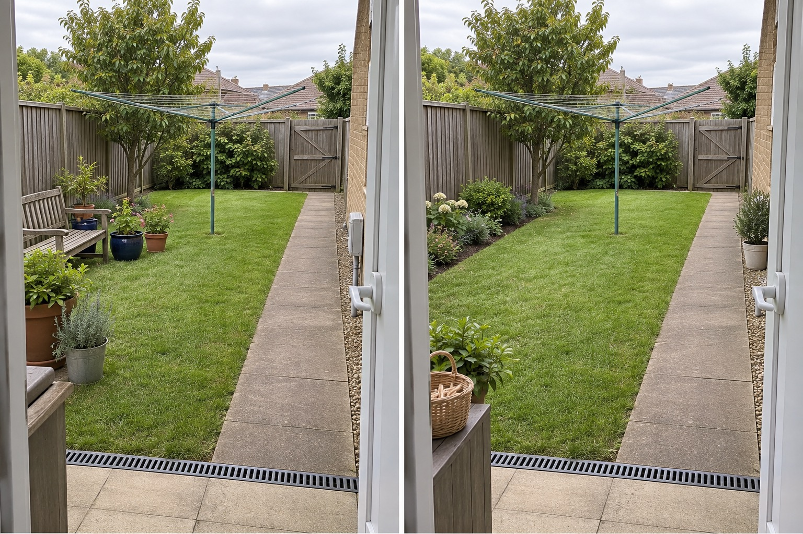

Keep the carrying line direct
The existing path from the laundry door reaches the clothesline and rear gate without weaving around loose pots or furniture.
A practical clothesline layout begins with the exact product in its fully operating state. Mark the space its arms, frame or lines need, keep the carrying path from the laundry clear, and preserve gate and drain access. Only then should nearby pots, seating or planting be arranged.
Editorially reviewed September 9, 2026.
This AI-generated comparison is visual inspiration, not installation guidance, a clearance measurement, structural assessment, accessibility certification, wind-safety conclusion, product recommendation or drying-performance promise.

The existing path from the laundry door reaches the clothesline and rear gate without weaving around loose pots or furniture.
The lawn around the fixed rotary line remains open; nearby planting does not touch the post, arms or hanging area.
A low border stays against the fence, outside the apparent work route, rather than turning the clothesline into a planted focal point.
Australian Government YourHome appliance guidance recommends outdoor line or rack drying when conditions allow, while its liveable-home guidance says clotheslines should be accessible along paths. Daytek’s fold-down instructions require product-specific clearance and user-reach consideration. These sources support checking the real route and manual—not copying a universal dimension from this image.
The rotary line and post, laundry doorway, paved path, channel drain, rear gate, lawn, tree, fence, house wall, ground levels and camera position remain unchanged. The concept does not relocate the line, alter its footing, enlarge the garden or claim that the pictured operating area fits any model.
Record the brand and model, then read its current instructions for movement, reach, loading, wind and maintenance limits.
With the line empty and used correctly, observe every moving part and the approach space. Do not estimate from a folded product.
Trace the trip from washer to line with a basket, including the gate, drain and turns. Note trip hazards and competing uses.
Reposition pots, baskets or seating before planting. Recheck access when plants are wet, mature or seasonally wider.
Avoid branches in the hanging area, a narrowed basket route, a hidden drain, gate access dependent on a folded line, dimensions from another model, play or dining activity inside the work zone, or assumptions that sun and breeze are identical year-round.
Stop before moving the post or brackets, digging, pouring concrete, attaching to a structure, changing drainage or specifying clearance. Follow the exact manufacturer instructions and obtain appropriate utility-location, structural, access or installation advice.
Start with a route from the laundry, the exact product’s operating space, local sun and weather observations, gate and drain access, privacy preferences and the manufacturer’s instructions.
Planting may soften an unused edge, but it should not enter the model-specific operating, access or maintenance area. Check mature spread rather than purchase size.
There is no reliable universal answer. Required space depends on the exact rotary, folding or retractable model, its installation method and site conditions.
AI can compare visual arrangements, but it cannot verify installation, structure, buried services, seasonal sun, local wind, accessibility or product-specific clearances.
Upload a level photo with the whole line, laundry approach, gate and drain visible, then compare arrangements around those fixed conditions.
AI-generated visualizations are concepts. Verify the product manual, operating area, access, seasonal conditions, buried services, drainage and professional requirements before physical work.